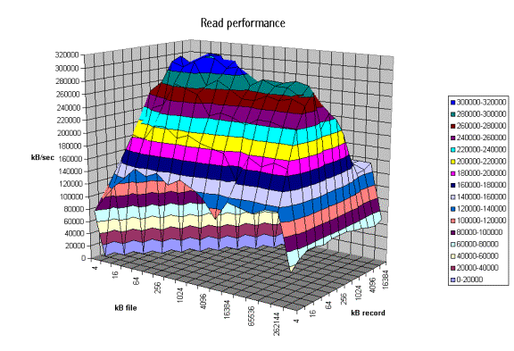
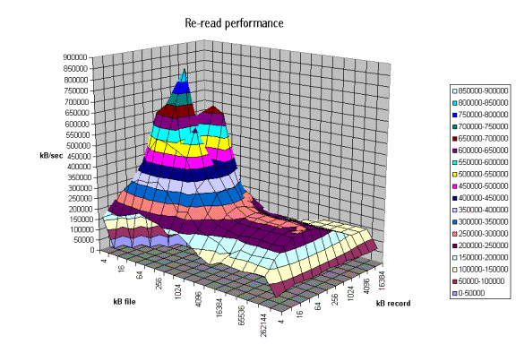
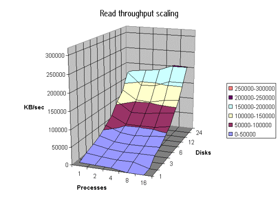
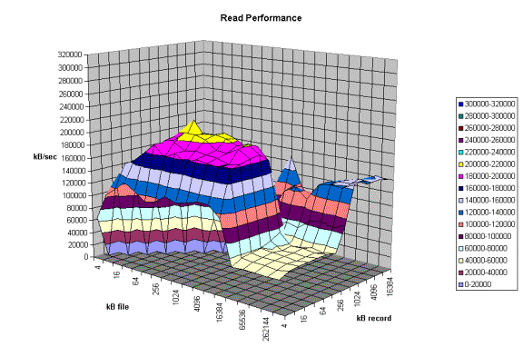
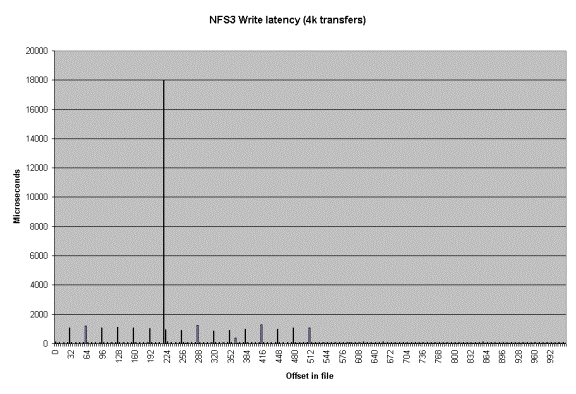
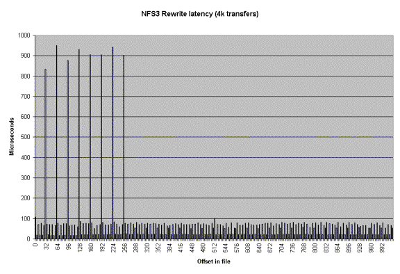
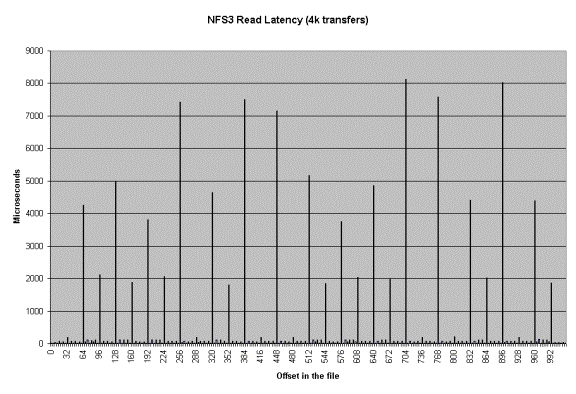
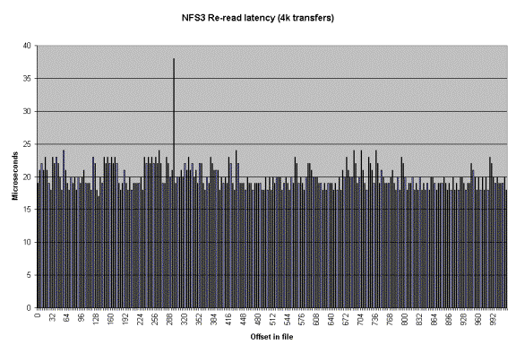

Iozone Filesystem Benchmark
IOzone is a filesystem benchmark tool. The benchmark generates and measures a variety of file operations. Iozone has been ported to many machines and runs under many operating systems. This document will cover the many different types of operations that are tested as well as coverage of all of the command line options.
Iozone is useful for determining a broad filesystem analysis of a vendor’s computer platform. The benchmark tests file I/O performance for the following operations.
Read, write,
re-read, re-write, read backwards, read strided, fread, fwrite, random
read/write, pread/pwrite variants, aio_read, aio_write
While computers are typically purchased with an application in mind it is also likely that over time the application mix will change. Many vendors have enhanced their operating systems to perform well for some frequently used applications. Although this accelerates the I/O for those few applications it is also likely that the system may not perform well for other applications that were not targeted by the operating system. An example of this type of enhancement is: Database. Many operating systems have tested and tuned the filesystem so it works well with databases. While the database users are happy, the other users may not be so happy as the entire system may be giving all of the system resources to the database users at the expense of all other users. As time rolls on the system administrator may decide that a few more office automation tasks could be shifted to this machine. The load may now shift from a random reader application (database) to a sequential reader. The users may discover that the machine is very slow when running this new application and become dissatisfied with the decision to purchase this platform. By using Iozone to get a broad filesystem performance coverage the buyer is much more likely to see any hot or cold spots and pick a platform and operating system that is more well balanced.
Features:
· ANSII ‘C’ source.
· POSIX async I/O.
· Mmap() file I/O.
· Normal file I/O.
· Single stream measurement.
· Multiple stream measurement.
· POSIX pthreads.
· Multi-process measurement.
· Excel importable output for graph generation.
· I/O Latency data for plots.
· 64-bit compatible source.
· Large file compatible.
· Stonewalling in throughput tests to eliminate straggler effects.
· Processor cache size configurable.
· Selectable measurements with fsync, O_SYNC.
· Options targeted for testing over NFS.
Building IOzone
Once you have obtained the source for IOzone you should have 12 files.
· iozone.c (source code)
· libasync.c (source code)
· makefile (makefile)
· libbif.c (source code)
· Iozone_msword_98.doc (documentation in Word format)
· iozone.1 (documentation in nroff format)
· gnuplot.dem (sample gnuplot file )
· gnuplotps.dem (sample gnuplot file that generates postscript output)
· read_telemetry (sample file for read telemetry file)
· write_telemetry (sample file for write telemetry file)
· Run_rules.doc (run rules to get reasonable results)
· Changes.txt (log of changes to Iozone since its beginning)
Type: make
The makefile will display a list of supported platforms. Pick the one that matches your configuration and then type: make target
That’s it. You’re done. There is no need to have any install procedures as IOzone creates all of its files in the current working directory. Just copy Iozone to wherever you wish to test the filesystem performance and then run it. Or you can use the –f command line option to specify a target path, for example, a path/filename in a new filesystem.
Command Line options:
The following is the output from the built in help. Each option’s purpose is explained in this section of the manual.
Usage: iozone [-s filesize_Kb] [-r record_size_Kb ] [-f [path]filename]
[-i test] [-E] [-p] [-a] [-A] [-z] [-Z] [-m] [-M] [-t children] [-h] [-o]
[-l min_number_procs] [-u max_number_procs] [-v] [-R] [-x]
[-d microseconds] [-F path1 path2...] [-V pattern] [-j stride]
[-T] [-C] [-B] [-D] [-G] [-I] [-H depth] [-k depth] [-U mount_point]
[-S cache_size] [-O] [-K] [-L line_size] [-g max_filesize_Kb]
[-n min_filesize_Kb] [-N] [-Q] [-P start_cpu] [-c] [-e] [-b filename]
[-J milliseconds] [-X filename] [-Y filename] [-w] [-W]
[-y min_recordsize_Kb] [-q max_recordsize_Kb]
What do they all mean ?
-a
Used to select full automatic mode. Produces output that covers all tested file operations
for record sizes of 4k to 16M for file sizes of 64k to 512M.
-A
This version of automatic mode provides more coverage but consumes a bunch of time.
The –a option will automatically stop using transfer sizes less than 64k once the file
size is 32 MB or larger. This saves time. The –A option tells Iozone that you are willing to
wait and want dense coverage for small transfers even when the file size is very large.
NOTE: This option is deprecated in Iozone version 3.61. Use –az –i 0 –i 1 instead.
-b filename
Iozone will create a binary file format file in Excel compatible output of results.
-B
Use mmap() files. This causes all of the temporary files being measured to be created
and accessed with the mmap() interface. Some applications prefer to treat files as arrays
of memory. These applications mmap() the file and then just access the array with loads
and stores to perform file I/O.
-c
Include close() in the timing calculations. This is useful only if you suspect that close() is
broken in the operating system currently under test. It can be useful for NFS Version 3
testing as well to help identify if the nfs3_commit is working well.
-C
Show bytes transferred by each child in throughput testing. Useful if your operating
system has any starvation problems in file I/O or in process management.
-d #
Microsecond delay out of barrier. During the throughput tests all threads or processes are
forced to a barrier before beginning the test. Normally, all of the threads or processes are
released at the same moment. This option allows one to delay a specified time in
microseconds between releasing each of the processes or threads.
-D
Use msync(MS_ASYNC) on mmap files. This tells the operating system that all the data in
the mmap space needs to be written to disk asynchronously.
-e
Include flush (fsync,fflush) in the timing calculations
-E
Used to select the extension tests. Only available on some platforms. Uses pread interfaces.
-f filename
Used to specify the filename for the temporary file under test. This is useful when
the unmount option is used. When testing with unmount between tests it is necessary for
the temporary file under test to be in a directory that can be unmounted. It is not possible
to unmount the current working directory as the process Iozone is running in this directory.
-F filename filename filename …
Specify each of the temporary file names to be used in the throughput testing. The number
of names should be equal to the number of processes or threads that are specified.
-g #
Set maximum file size (in Kbytes) for auto mode.
-G
Use msync(MS_SYNC) on mmap files. This tells the operating system that all the data in the
mmap space needs to be written to disk synchronously.
-h
Displays help screen.
-H #
Use POSIX async I/O with # async operations. Iozone will use POSIX async I/O with a
bcopy from the async buffers back into the applications buffer. Some versions of MSC
NASTRAN perform I/O this way. This technique is used by applications so that the async
I/O may be performed in a library and requires no changes to the applications internal model.
-i #
Used to specify which tests to run. (0=write/rewrite, 1=read/re-read, 2=random-read/write
3=Read-backwards, 4=Re-write-record, 5=stride-read, 6=fwrite/re-fwrite, 7=fread/Re-fread,
8=pwrite/Re-pwrite, 9=pread/Re-pread, 10=pwritev/Re-pwritev, 11=preadv/Re-preadv).
One will always need to specify 0 so that any of the following tests will have a file to measure.
-i # -i # -i # is also supported so that one may select more than one test.
-I
Use VxFS VX_DIRECT for all file operations. Tells the VXFS filesystem that all operations
to the file are to bypass the buffer cache and go directly to disk.
-j #
Set stride of file accesses to (# * record size). The stride read test will read records at this stride.
-J # (in milliseconds)
Perform a compute delay of this many milliseconds before each I/O operation. See also
-X and -Y for other options to control compute delay.
-k #
Use POSIX async I/O (no bcopy) with # async operations. Iozone will use POSIX async
I/O and will not perform any extra bcopys. The buffers used by Iozone will be handed to
the async I/O system call directly.
-K
Generate some random accesses during the normal testing.
-l #
Set the lower limit on number of processes to run. When running throughput tests this
option allows the user to specify the least number of processes or threads to start. This
option should be used in conjunction with the -u option.
-L #
Set processor cache line size to value (in bytes). Tells Iozone the processor cache line size.
This is used internally to help speed up the test.
-m
Tells Iozone to use multiple buffers internally. Some applications read into a single
buffer over and over. Others have an array of buffers. This option allows both types of
applications to be simulated. Iozone’s default behavior is to re-use internal buffers.
This option allows one to override the default and to use multiple internal buffers.
-M
Iozone will call uname() and will put the string in the output file.
-n #
Set minimum file size (in Kbytes) for auto mode.
-N
Report results in microseconds per operation.
-o
Writes are synchronously written to disk. (O_SYNC). Iozone will open the files with the
O_SYNC flag. This forces all writes to the file to go completely to disk before returning to
the benchmark.
-O
Give results in operations per second.
-p
This purges the processor cache before each file operation. Iozone will allocate another
internal buffer that is aligned to the same processor cache boundary and is of a size that
matches the processor cache. It will zero fill this alternate buffer before beginning each test.
This will purge the processor cache and allow one to see the memory subsystem without
the acceleration due to the processor cache.
-P #
Bind processes/threads to processors, starting with this cpu #. Only available on some
platforms. The first sub process or thread will begin on the specified processor. Future processes or threads will be placed on the next processor. Once the total number of cpus is exceeded then future processes or threads will be placed in a round robin fashion.
-q #
Set maximum record size (in Kbytes) for auto mode. One may also specify
-q #k (size in Kbytes) or -q #m (size in Mbytes) or -q #g (size in Gbytes).
See –y for setting minimum record size.
-Q
Create offset/latency files. Iozone will create latency versus offset data files that can be
imported with a graphics package and plotted. This is useful for finding if certain offsets
have very high latencies. Such as the point where UFS will allocate its first indirect block.
One can see from the data the impacts of the extent allocations for extent based filesystems
with this option.
-r #
Used to specify the record size, in Kbytes, to test. One may also specify
-r #k (size in Kbytes) or -r #m (size in Mbytes) or -r #g (size in Gbytes).
-R
Generate Excel report. Iozone will generate an Excel compatible report to standard out. This
file may be imported with Microsoft Excel (space delimited) and used to create a graph of
the filesystem performance. Note: The 3D graphs are column oriented. You will need to
select this when graphing as the default in Excel is row oriented data.
-s #
Used to specify the size, in Kbytes, of the file to test. One may also specify
-s #k (size in Kbytes) or -s #m (size in Mbytes) or -s #g (size in Gbytes).
-S #
Set processor cache size to value (in Kbytes). This tells Iozone the size of the processor cache.
It is used internally for buffer alignment and for the purge functionality.
-t #
Run Iozone in a throughput mode. This option allows the user to specify how
many threads or processes to have active during the measurement.
-T
Use POSIX pthreads for throughput tests. Available on platforms that have POSIX threads.
-u #
Set the upper limit on number of processes to run. When running throughput tests this
option allows the user to specify the greatest number of processes or threads to start.
This option should be used in conjunction with the -l option.
-U mountpoint
Mount point to unmount and remount between tests. Iozone will unmount and remount
this mount point before beginning each test. This guarantees that the buffer cache does not
contain any of the file under test.
-v
Display the version of Iozone.
-V #
Specify a pattern that is to be written to the temporary file and validated for accuracy in
each of the read tests.
-w
Do not unlink temporary files when finished using them. Leave them present in the filesystem.
-W
Lock files when reading or writing.
-x
Turn off stone-walling. Stonewalling is a technique used internally to Iozone. It is used during
the throughput tests. The code starts all threads or processes and then stops them on a barrier.
Once they are all ready to start then they are all released at the same time. The moment that
any of the threads or processes finish their work then the entire test is terminated and
throughput is calculated on the total I/O that was completed up to this point. This ensures
that the entire measurement was taken while all of the processes or threads were running
in parallel. This flag allows one to turn off the stonewalling and see what happens.
-X filename
Use this file for write telemetry information. The file contains triplets of information:
Byte offset, size of transfer, compute delay in milliseconds. This option is useful if one has
taken a system call trace of the application that is of interest. This allows Iozone to replicate the I/O operations that this specific application generates and provide benchmark results for this file behavior. (if column 1 contains # then the line is a comment)
-y #
Set minimum record size (in Kbytes) for auto mode. One may also specify
-y #k (size in Kbytes) or -y #m (size in Mbytes) or -y #g (size in Gbytes).
See –q for setting maximum record size.
-Y filename
Use this file for read telemetry information. The file contains triplets of information:
Byte offset, size of transfer, compute delay in milliseconds. This option is useful if one has
taken a system call trace of the application that is of interest. This allows Iozone to replicate the I/O operations that this specific application generates and provide benchmark results for this file behavior. (if column 1 contains # then the line is a comment)
-z
Used in conjunction with -a to test all possible record sizes. Normally Iozone omits testing
of small record sizes for very large files when used in full automatic mode. This option forces
Iozone to include the small record sizes in the automatic tests also.
-Z
Enable mixing mmap I/O and file I/O.
What can I see:
The following are some graphs that were generated from the Iozone output files.

From the graph above one can clearly see the buffer cache helping out for file sizes that are less than 256MB but after that the actual disk I/O speed can be seen. Also note that the processor cache effects can be seen for file sizes of 16 Kbytes to 1Mbyte.

The graph above is displaying the impact of re-reading a file. Notice that the processor cache is now very important and causes the sharp peak. The next plateau to the right is buffer cache and finally above 256MB the file no longer fits in the buffer cache and real spindle speeds can be seen.

The graph above was created by running Iozone multiple times and then graphing the combination of the results. Here the graph is showing the throughput performance as a function of processes and number of disks participating in a filesystem. (disk striping) The good news is that on this system as one adds disks the throughput increases. Not all platforms scale so well.

The graph above shows single stream performance where file
size and request size are changed. The place on the lower right that touches
the floor of the graph is not actual data. Excel graphs empty cells as
containing a zero. This run was taken with the –a option. If one used the –A
option then the area that was not tested would have been tested and had real
values. Normally this is not a desirable area to test because it is very time
consuming to write a 512MB file in 4k transfer sizes. The –a option in Iozone tells Iozone to discontinue use of
transfer sizes less than 64k once the file size is 32MB or bigger. This saves
quite a bit of time. Notice the ridge
that runs from the top left to the lower right down the center of the graph.
This is where the request size fits in the processor cache. For file sizes less than the size of the
processor cache you can see the rise in performance as well. When both the file
size and the transfer size is less than the processor cache it rises even
higher. Although interesting to see, it is unlikely that you will be able to
get applications to never write files that are bigger than the processor cache J
However it might be possible to get applications to try to re-use buffers and
keep the buffer size smaller than the processor cache size.

The graph above is an example of a real system with some
interesting “optimizations”. Here one can see that there are some file sizes
and some record sizes that have very bad performance. Notice the performance
dip at record sizes of 128Kbytes. There is also a dropoff for file sizes
of 8 MB and larger. The dropoff for files
greater than 8MB is very interesting since this machine has 16 GB of memory and
an 8GB buffer cache. This is a classic example of tuning for a specific
application. If the poor system administrator ever installs an application that
likes to read or write files in a record size of 128Kbytes to 1Mbytes his users
will probably take him out back for a conference. If the system would have been
characterized before it was purchased it would never have made it into the
building.
Another type of graph that can be produced is the Latency
graph. When the -Q option is used Iozone will generate four .dat files.
Rol.dat, wol.dat, rwol.dat and rrol.dat. These are read offset latency, write
offset latency, rewrite offset latency and reread offset latency. These files
can be imported into Excel and then graphed.
The latency versus offset information is useful for seeing
if there are any particular offsets in a file that have high latencies. These
high latencies can be caused by a variety of causes. An example would be if the
file size is just a bit bigger than the buffer cache size. The first time the
file is written the latency will be low for each transfer. This is because the
writes are going into the buffer cache and the application is allowed to
continue immediately. The second time the file is written the latencies will be
very high. This is due to the fact that the buffer cache is now completely full
of dirty data that must be written before the buffer can be reused. The reason
that this occurs when the file is bigger than the buffer cache is because the
write to the first block on the rewrite case will not find the block in the
buffer cache and will be forced to clean a buffer before using it. The cleaning
will take time and will cause a longer latency for the write to complete.
Another example is when the filesystem is mounted from a remote machine. The
latency graphs can help to identify high latencies for files that are being
accessed over the network. The
following are a few latency graphs for file I/O over an NFS version 3
filesystem.




In the re-read latency graph one can clearly see the client side cache that is in NFS Version 3. The reread latencies are clearly not the latencies that one would get if the reads actually went to the NFS server and back.
Run rules:
If you wish to get accurate results for the entire range of performance for a platform you need to make sure that the maximum file size that will be tested is bigger than the buffer cache. If you don't know how big the buffer cache is, or if it is a dynamic buffer cache then just set the maximum file size to be greater than the total physical memory that is in the platform.
In general you should be able to see three or four plateaus.
File size fits in processor cache.
File size fits in buffer cache
File size is bigger than buffer cache.
You may see another plateau if the platform has a primary and secondary processor caches. If you don't see at least 3 plateaus then you probably have the maximum file size set too small. Iozone will default to a maximum file size of 512 Mbytes. This is generally sufficient but for some very large systems you may need to go into the source and increase the maximum file size. See the file Run_rules for further information.
Source code
availability
Iozone is in public domain and its source is available for free. One might consider using it before your company purchases its next platform.
Additional notes on
how to make the graphs
Iozone sends Excel compatible output to standard out. This may be redirected to a file and then processed with Excel. The normal output for Iozone as well as the Excel portion are in the same output stream. So to get the graphs one needs to scroll down to the Excel portion of the file and graph the data in that section. There are several sets of graph data. "Writer report" is one example. When importing the file be sure to tell Excel to import with "delimited" and then click next, then click on the "space delimited" button. To graph the data just highlight the region containing the file size and record size and then click on the graph wizard. The type of graph used is "Surface". When the next dialog box pops up you need to select "Columns". After that the rest should be straight forward.
Contributors: http://www.iozone.org
Original Author: William D. Norcott. wnorcott@us.oracle.com
Features & extensions: Don Capps capps@rsn.hp.com